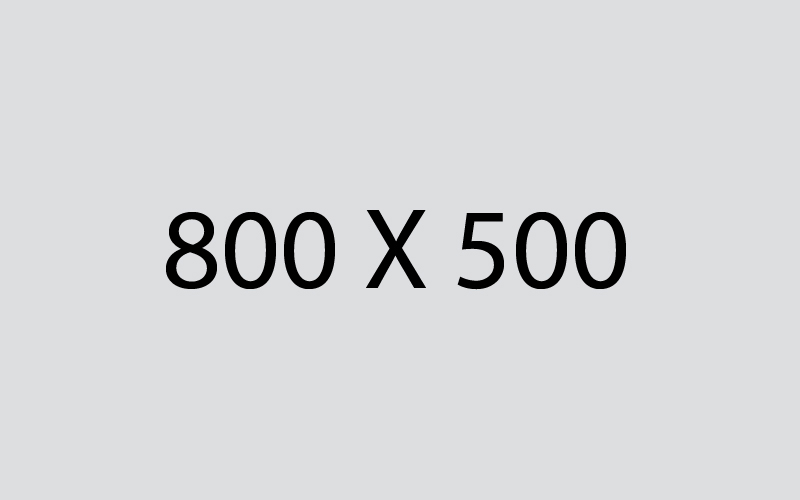

TOKEN2040: The Future of Crypto, Decrypted
The NFT space has made unprecedented progress since we first launched Giglink in late 2021, as it hit several major milestones in the past…

However, as the space keeps expanding and people proceed to mint thousands of NFTs every day, an important question arises - how do we make sure that all that creative work remains accessible over time?
Earlier this year, as NFTs began hitting the mainstream, the industry faced a major technical problem. As highlighted by some analysts, most of the JPEGs (or other file formats) that serve as the media basis for their respective NFTs weren't stored on the chain itself. Instead, NFTs often simply redirected to a URL where the corresponding media was hosted - in most cases, that was a separate domain that belonged to either the creator or the platform where that NFT was minted.
But what happens when those domains go down? With that discovery, it became apparent that some NFTs have a single point of failure, which, in turn, could significantly impact their longevity and value.
In light of that, numerous projects and organisations have begun working on a potential fix. In a recent Clubhouse session, we brought those pioneering protocols and projects - Protocol Labs (an open-source lab that is working on Filecoin, IPFS and libp2p), Async.art, Fleek and Arweave - together to have a constructive discussion about the future of NFT metadata. Here's a concise recap of the main ideas that were discussed there.
What's an NFT?
This is the part that takes a bit of open-mindedness. An NFT is a unique digital token, with most using the ethereum blockchain to digitally record transactions. It's not a cryptocurrency like bitcoin or ether, because those are fungible -- exchangeable for another bitcoin or cash. NFTs are recorded in a digital ledger in the same way as cryptocurrency, so there's a listing of who owns each one.
What makes an NFT unique is the digital asset tied to the token. This can be an image, video, tweet or piece of music that's uploaded to a marketplace, which creates the NFT to be sold.